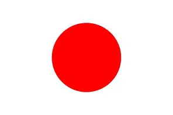

History of Japan and history about the Japan flag
Japan’s story begins thousands of years ago, with the Jōmon people who lived as hunter-gatherers and made some of the world’s earliest pottery. Over time, rice farming and metal tools arrived from the Asian mainland during the Yayoi period, which created more structured societies and powerful clans. By the Kofun era, leaders were building huge burial mounds, and the roots of the imperial family were established. In 710, Japan entered the Nara period, with its first permanent capital, and later the Heian period, where Kyoto became the cultural center. Court life flourished, producing art, poetry, and classics such as The Tale of Genji. But political power shifted with the rise of the samurai. From the 12th century, shogunates like the Kamakura and Ashikaga ruled the land, while Japan resisted Mongol invasions and endured centuries of civil war during the Sengoku period. Unity came in the early 1600s under Tokugawa Ieyasu, beginning the Tokugawa shogunate. Japan closed itself off to much of the world for over two centuries in a time of peace and cultural growth, with traditions like kabuki theater and haiku poetry flourishing. This isolation ended in 1868 with the Meiji Restoration, when the emperor regained power and Japan rapidly modernized, adopting Western technology, government, and military systems. By the early 20th century, Japan had become an empire, defeating China and Russia and expanding across Asia. World War II brought both Japan’s most aggressive expansion and its greatest tragedy, ending with the devastation of Hiroshima and Nagasaki in 1945. After surrender, Japan embraced democracy under a new pacifist constitution. In the decades that followed, the country experienced rapid economic growth, becoming a global leader in technology, cars, and electronics. Today, Japan is a highly developed nation, balancing its ancient traditions with modern innovation.
History about the flag
The Japanese flag, known as the Hinomaru, is one of the simplest and most recognizable in the world: a red circle on a white field. Its meaning is deeply tied to Japan’s identity. The circle represents the sun, and Japan itself is called Nihon or Nippon, meaning “origin of the sun.” In mythology, the Imperial family is said to descend from the sun goddess Amaterasu, which gave the emblem sacred and national significance. Although the symbol of the sun had appeared in Japan for centuries, it was during the medieval era that it began to feature on samurai banners and in religious contexts. By the Tokugawa shogunate in the 1600s, it was used on ships engaging in foreign trade, acting as a de facto emblem of Japan. With the Meiji Restoration in the late 19th century, the Hinomaru was formally adopted as the national flag in 1870. As Japan modernized and became a world power, the flag became a symbol of unity. However, during World War II it was strongly associated with militarism and imperial conquest. After Japan’s defeat, the Allied Occupation authorities restricted its use, though it continued to fly informally. Restrictions eased by 1949, and over time the Hinomaru regained acceptance. In 1999, Japan officially declared the Hinomaru its national flag through a law that also established Kimigayo as the national anthem. Today, it represents Japan on the global stage — a simple sun on a white field, carrying both pride in cultural identity and the weight of a complex history.
President Of Japan
Japan does not have a president—the country is led by a Prime Minister. As of now, that position is held by Shigeru Ishiba, who assumed office on October 1, 2024
A Glimpse into Prime Minister Shigeru Ishiba’s Story
Shigeru Ishiba’s path to the premiership has unfolded over decades, marked by persistence, expertise, and deep-rooted political lineage. Born into a political family—his father served as governor and later a minister—he graduated from Keio University and began his career in public service before entering electoral politics in 1986, winning a seat in the House of Representatives at age 29
Over the years, he garnered experience across key ministries. He held the defense portfolio, then agricultural and forestry, among other roles—making him one of his generation’s most seasoned policy wonks Wikipedia . Known for his persistence, Ishiba ran repeatedly for leadership within the Liberal Democratic Party (LDP), finally succeeding on his fifth attempt in September 2024. This victory lifted him to the party presidency and paved the way for his appointment as Prime Minister by the Diet the following month